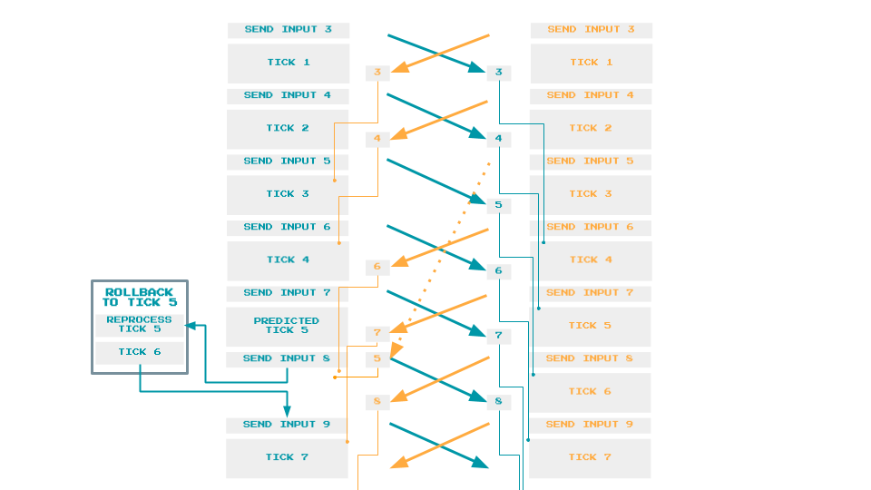

Preludium
Jakiś czas temu kiedy próbowałem robić grę strategiczną natrafiłem na problem podczas implementacji rozgrywki wieloosobowej. Sieć nie potrafiła obsłużyć większej ilości jednostek. Nic dziwnego w końcu serwer stale musi przesyłać informacje o każdej jednostce do klientów co przy większej/ogromnej ilości wymaga bardzo dobrego łącza. Dlatego też poszukałem innego rozwiązaniaLockstep Multiplayer
Idea tego starego rozwiązania jest prosta. Zamiast pobierać informacje o stanie gry z serwera, można pobrać tylko i wyłącznie input innych graczy, jak np. rozkazy dla jednostek. Wtedy każdy gracz posiada własną symulację świata, ale ponieważ każdy gracz ładuje do niej te same inputy, output symulacji u każdego gracza jest taki sam. Warto tutaj zauważyć że symulacja jest tak wolna jak najwolniejszy gracz, gdyż reszta symulacji nie kroku naprzód bez dostania inputu od wszystkich graczy. Oczywiście to rozwiązanie wymaga zaimplementowania tur w których inputy graczy będą faktycznie wprowadzane do symulacji, aby zachować płynność rozgrywki tura powinna trwać odpowiednią ilość czasu. Plusy rozwiązania
- Niskie wymagania przepustowości sieci
- Łatwa możliwość nagrania rozgrywki (wystarczy nagrać input'y graczy)
- Brak możliwości oszukiwania (każda taka próba kończy się desynchronizacją symulacji)
Desynchronizacja
Oczywiście ciężko jest uruchomić dwie idealnie takie same symulacje na dwóch różnych komputerach, dlatego podstawowym problemem tego rozwiązania jest desynchronizacja, czyli moment w którym symulacje klientów zaczynają się różnić. Aby tego uniknąć elementy symulacji jak i sama symulacja musi być deterministyczna. Również trzeba pamiętać o generowaniu takich samych zmiennych losowych w symulacjach jak i o zmiennych float, które mogą przyjmować nieznacznie inne wartości na różnych maszynach (np. pozycja jednostki na mapie). Jednak w momencie jej wystąpienia dalsza rozgrywka jest niemożliwa bez przesłania całej symulacji przez jednego z klientów.Historia oraz moje próby implementacji
Rozwiązanie te było stosowane w starych grach ze względu na niską przepustowość w tamtych czasach, jednak wraz z czasem zaczęto powoli odchodzić od tego rozwiązania na rzecz client-serwer które było bardziej niezawodne. Idea ta jednak uchowała się w niektórych grach strategicznych m.in.- Starcraft
- Europa Universalis 4
- Hearts of Iron 4
- Victoria 2
Co do mojej gry strategicznej, niestety zorientowałem się że moje implementacje zapewniają niemal 100% desynchronizację dlatego też planuję napisać ją od zera.